AnyPortrait > 메뉴얼 > 작업 공간, 애니메이션 UI
작업 공간, 애니메이션 UI
1.2.2
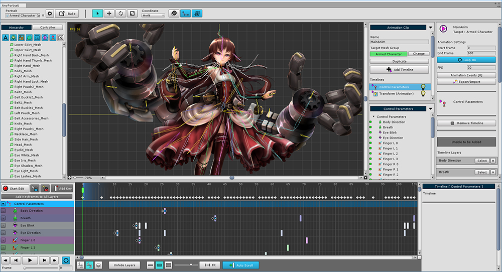
이 페이지에서는 작업 공간이나 다른 UI를 작업하기 편하게 제어하는 방법을 설명합니다.
제한된 영역에서 필요한 정보만 출력하여 작업의 능률을 높일 수 있습니다.
작업 공간 최대화
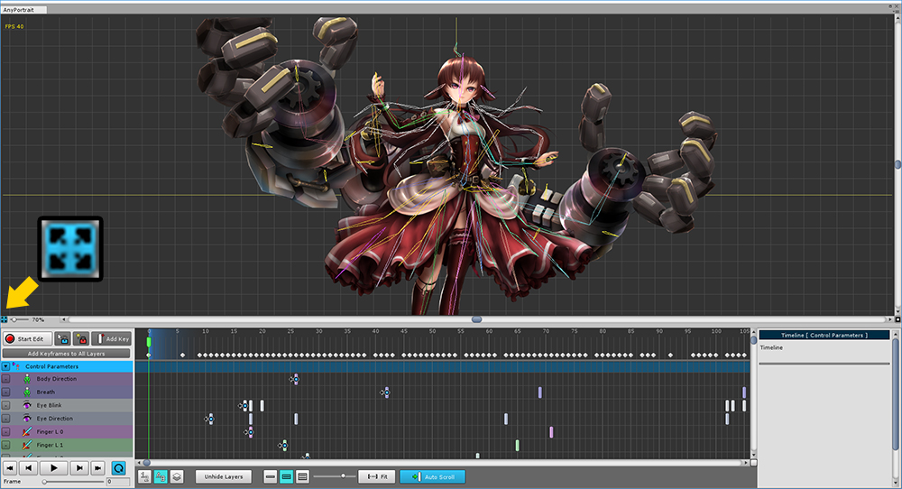
작업 공간의 좌측 하단에 위치한 작은 버튼을 누르면 좌우, 상단의 UI를 숨길 수 있습니다.
애니메이션 작업 특성상 타임라인은 사라지지 않습니다.
애니메이션 화면 뿐만 아니라 모든 메뉴에서 사용 가능한 기능입니다.
(단축키 : Alt+W )
타임라인 UI 크기 조절
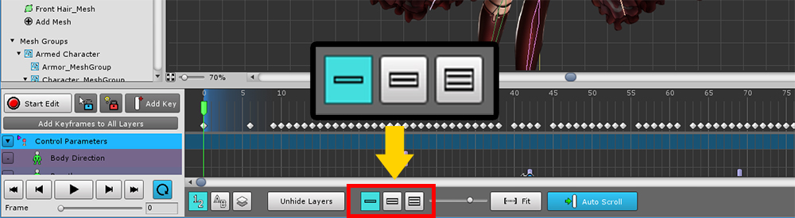
화면 하단의 애니메이션 타임라인 UI 크기는 3단계로 조절할 수 있습니다.
화면 하단의 버튼 3개를 이용하여 전환합니다.
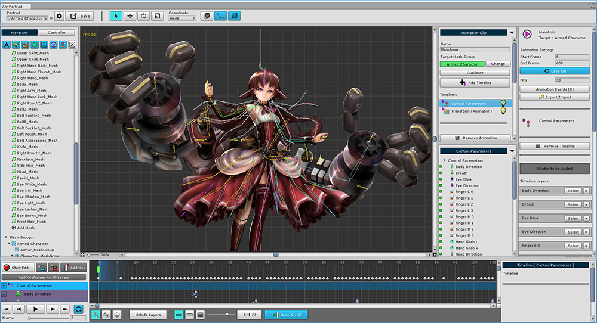
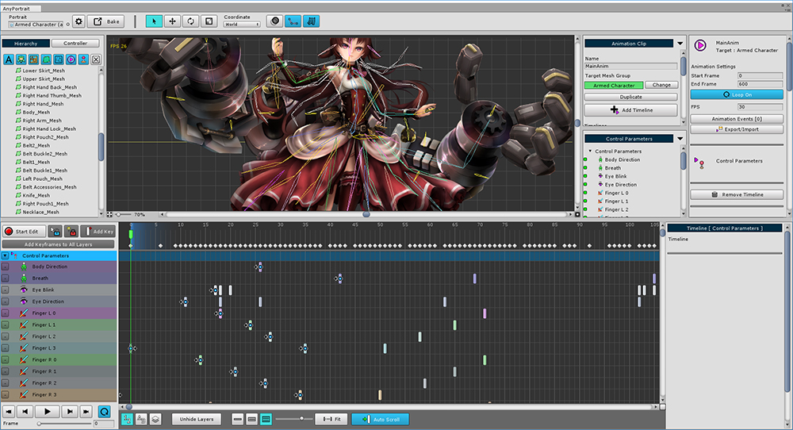
객체를 선택해서 편집할 때에는 타임라인 UI를 작게 하고, 키프레임을 수정할 때에는 타임라인 UI를 크게 하여 작업하면 편리할 것입니다.
타임라인 레이어 숨기기
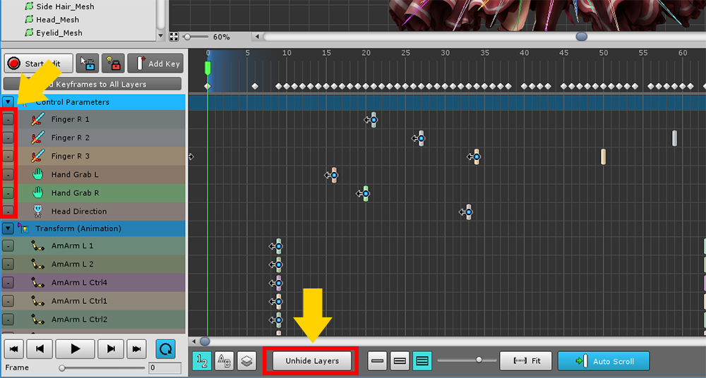
타임라인 레이어가 많아지면 보기가 불편합니다.
타임라인 레이어의 왼쪽에 있는 작은 버튼을 누르면 안보이게 숨길 수 있습니다.
Unhide Layers 버튼을 누르면 숨겨진 모든 타임라인 레이어를 다시 나타나게 합니다.
양쪽의 UI 접기
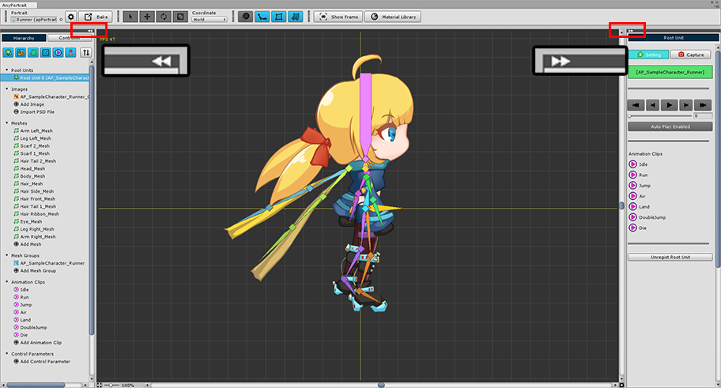
1.1.8
작업 공간의 양쪽의 UI는 작업 중에는 종종 필요없는 경우가 있습니다.
위에서 설명된 "작업 공간의 최대화"와 다른 방법으로 사용자는 왼쪽, 또는 오른쪽의 UI만 선택적으로 숨길 수 있습니다.
v1.1.8부터 왼쪽과 오른쪽의 UI의 상단에 "◀◀" 형태의 버튼과 회색의 바가 추가되었습니다.
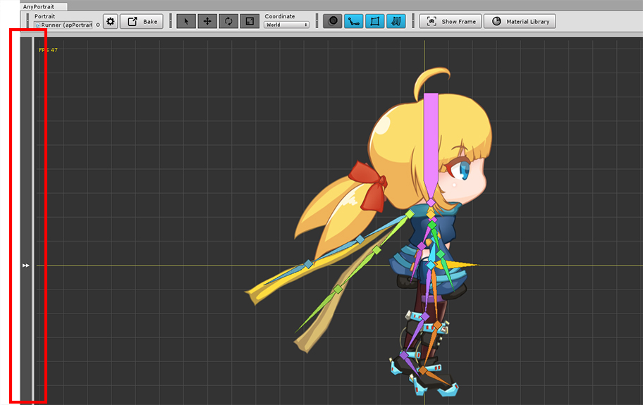
"◀◀" 형태의 버튼을 누르면 UI를 좌우로 숨기거나 다시 보이게 만들 수 있습니다.
버튼 뿐만 아니라 회색의 바를 눌러도 숨겨진 UI가 다시 나타납니다.

메시 그룹이나 애니메이션 클립을 선택하면 오른쪽의 UI에는 위 이미지와 같이 "-" 형태의 버튼이 더 추가됩니다.
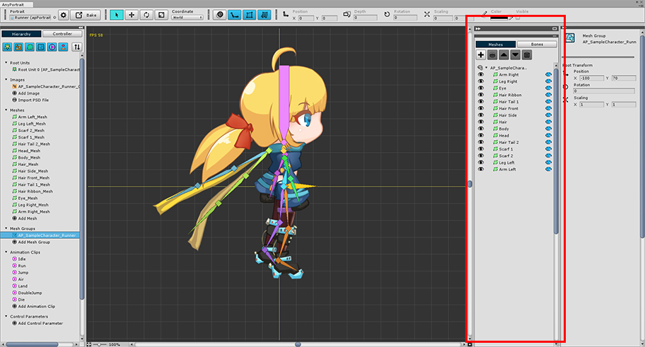
"-" 형태의 버튼을 누르면 해당 UI가 접히고, 상단 또는 하단의 다른 UI의 영역이 넓어집니다.
숨겨진 UI의 "-" 버튼의 형태는 "□" 모양으로 바뀌며, 이 버튼을 다시 누르면 원래의 크기로 돌아갑니다.
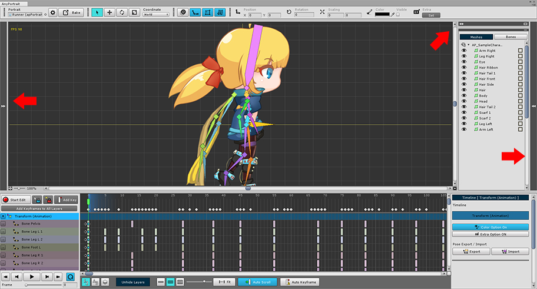
위 이미지와 같이 자신에게 맞게 UI를 조절하여 효율적인 작업을 하실 수 있습니다.
화면 상단 UI
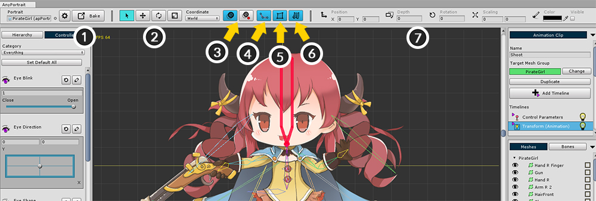
1. 설정과 Bake : 에디터나 작업 중인 apPortrait의 설정을 변경할 수 있습니다.
2. 선택/변형 툴 : 오브젝트를 선택하고 이동, 회전하거나 크기를 바꿀 수 있는 도구입니다. (단축키 : Q, W, E, R )
3. Onion Skin : Onion Skin(잔상)을 켤 수 있고, 상태를 기록할 수 있습니다. (단축키 : O ) Ctrl 키를 누르고 클릭하면 상세 설정이 나타납니다.
4. 본 보이기/숨기기 : 본을 보이거나 숨길 수 있습니다. "숨기기, 보이기, 선만 보이기"의 3가지 단계가 있습니다. (단축키 : B )
5. 메시 보이기/숨기기 : 메시를 보이거나 숨길 수 있습니다.
6. 물리 효과 켜기/끄기 : 물리 효과를 켜거나 끌 수 있습니다.
7. 객체의 변형 정보 : 편집 중인 객체의 위치, 회전, 크기, 색상 등의 값이 나타납니다. 객체에 따라 정보가 조금씩 다릅니다.
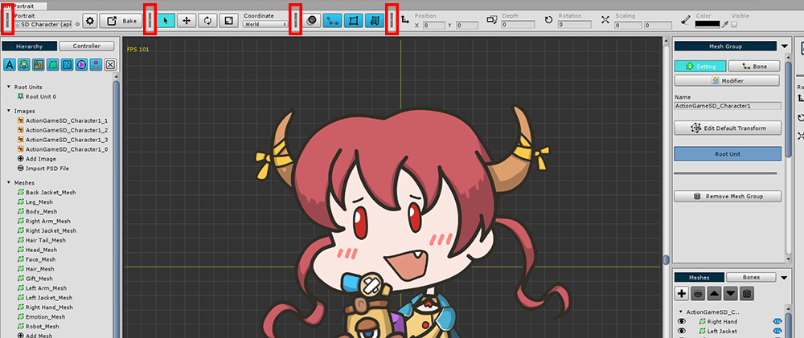
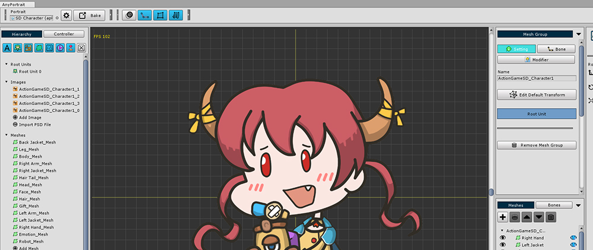
화면 상단 UI의 각 도구 그룹들을 숨길 수 있습니다.
도구 그룹의 구분자를 클릭하면 해당 도구들이 숨겨집니다.
접혀진 구분자를 클릭하면 다시 도구 그룹이 나타납니다.
애니메이션 UI 추가된 기능
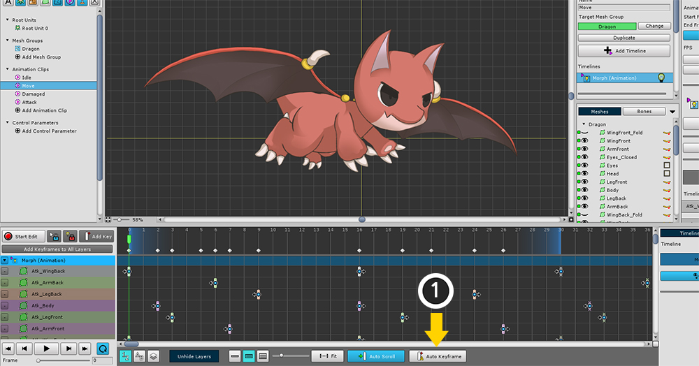
1. Auto Keyframe : 이 기능이 켜진 상태에서 객체를 수정하면 키프레임이 자동으로 생성됩니다.
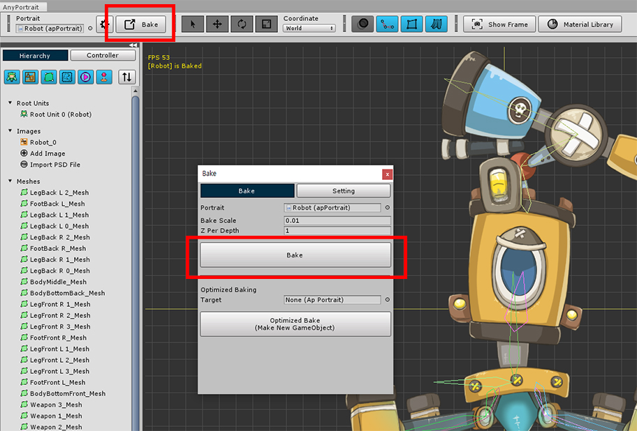
1.2.2
Ctrl (Mac OS에서는 Command )와 Shift 를 누른 상태에서 타임라인 UI의 상단의 빈 공간을 클릭하면, 타임 슬라이더가 해당 위치로 바로 이동합니다.